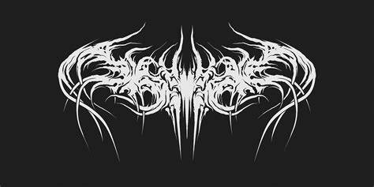
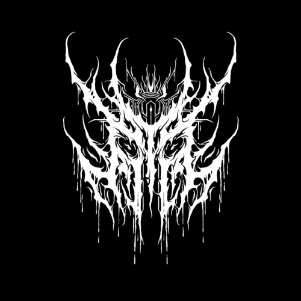
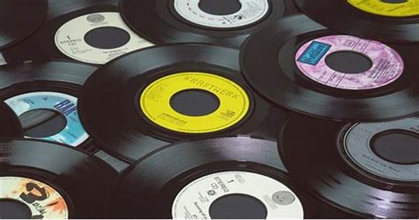

Bine ai venit!
Viniluri și CD-uri în București pentru colecționari și începători
La magazinul de discuri din București găsești viniluri și CD-uri pentru toate genurile, cu focus pe rock și metal. Dacă ești la început, îți explicăm pe scurt cum alegi un pick-up și cum îți îngrijești colecția de muzică.
Termeni tehnici (marcați idiomatic): hi-fi, second-hand. Important: verifică întotdeauna starea discului înainte de cumpărare.
- Pick-up
- Dispozitiv pentru redarea vinilurilor, cu braț și ac (cartuș).
- Hi-Fi
- Termen folosit pentru redare audio de calitate (fidelitate ridicată).
Resursă externă (nu e în meniu): Discogs (catalog & marketplace)
Link extern către un element din resursă (cu # + textul e adresa + wbr):
https://developer.mozilla.org/en-US/docs/Web/HTML/Element/picture
Corecție de text:
Vinilul e doar pentru nostalgie.
Vinilul e și pentru colecționare și pentru experiența de ascultare.
O colecție bună începe cu un disc ales corect.Lectură recomandată: Discogs
Promoții
2+1: la 2 produse, al 3-lea are 50% reducere (pe cel mai ieftin)
Promoția se aplică în limita stocului disponibil.
Oferte săptămâna aceasta
Avem promoții la viniluri și CD-uri pentru rock și metal, plus câteva titluri limited edition.
Număr clienți în magazin (simulat, raportat la capacitate):
Popularitatea promoției (simulat):
Produse
Pe stoc: viniluri, CD-uri și accesorii de pick-up. Vei găsi muzică în special rock și metal, dar și alte genuri.


Link cu imagine: deschide imaginea mare în tabul curent:

{kind=link}
Link de download (funcționează pe server, ex: Live Server): Descarcă ghidul PDF
Info & Video: viniluri și CD-uri
Dacă te-ai întrebat cum se produc vinilurile sau cum funcționează CD-urile, ai mai jos două clipuri.
Evenimente
- — Listening Party Rock — ascultăm albume clasice pe vinil, în limita locurilor.
- — Ghid: primul pick-up — ce înseamnă cartuș, ac, anti-skate și întreținere.
- — Zi de evaluare discuri — adu CD-uri/viniluri pentru estimare (orientativ).
Orar
| Perioadă | Zi | Dimineața | Pauză | Seara |
|---|---|---|---|---|
| Zile lucrătoare | Luni | 10–12 | 12–14 | 14–20 |
| Marți | 9–12 | 12–14 | 14–21 | |
| Miercuri | 9–11 | 11–13 | 14–21 | |
| Joi | 9–11 | 11–13 | 14–21 | |
| Vineri | 9–12 | 12–14 | 14–19 | |
| Weekend | Sâmbătă | 10–12 | 12–13 | 13–16 |
| Duminică | 10–14 | - | închis | |
| În timpul sărbătorilor legale, fiecare ascultă muzica în casa lui :) | ||||
Întrebări frecvente
De unde pasiunea pentru muzică?
De obicei începe cu un album bun și continuă cu descoperirea de trupe și genuri.
Cum încep să învăț despre trupe și genuri?
Începe cu câteva albume reprezentative, apoi explorează label-uri și influențe.
Cum aleg primul meu pick-up?
Uită-te la buget, la tipul de ac/cartuș și la întreținere; cere recomandări în magazin.
Bonus: formulă
Un exemplu simplu pentru numărul de combinații gen–subgen: